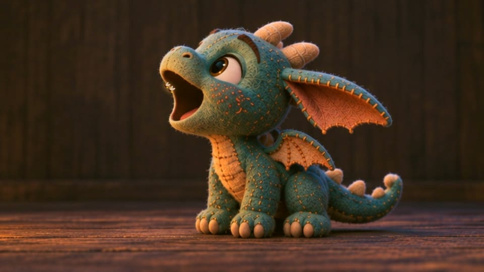

Семейная сказка · 40 с
Фонарик для дракона
История о том, как поддержка помогает справиться со страхом.
Мультфильмы по вашим историям
Личные и семейные воспоминания, сказки для детей и идеи компаний превращаем в короткие мультфильмы. Сначала обсуждаем замысел и возможности, затем согласуем сюжет и образы.
Каждый проект оцениваем отдельно: сроки и стоимость сообщим после обсуждения задачи.

Портфолио
Это вымышленные демонстрационные сюжеты, созданные с помощью ИИ. Они показывают стиль и подход, а не готовый результат для каждого заказа.
История о том, как поддержка помогает справиться со страхом.
Праздничная история о поиске своего места.
Пример рассказа о работе родителей глазами ребёнка.
Направления
Сказка для ребёнка, личная или семейная история, важный момент или воспоминание, которое хочется передать дальше.
Объяснение продукта, обучение сотрудников или история компании в понятном мультяшном сюжете.
Длинные фильмы, серии и нестандартные задачи обсуждаем индивидуально — после оценки идеи и объёма работы.
Процесс
Что хотите показать, кому адресован мультфильм и когда он нужен.
Обсуждаем сюжет, образы героев, объём, стоимость и срок до начала производства.
Собираем сцены в фильм и показываем результат на согласованных условиях.
Начнём с разговора
Напишите, даже если пока есть только идея. Мы уточним детали и скажем, можем ли её реализовать.